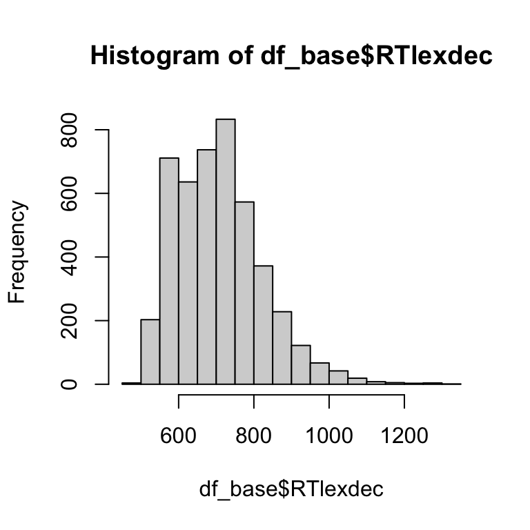
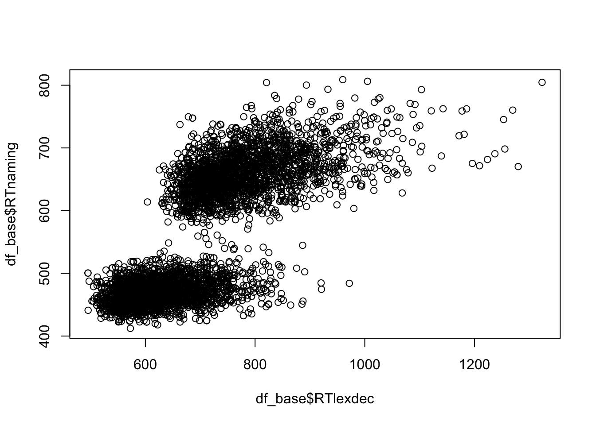
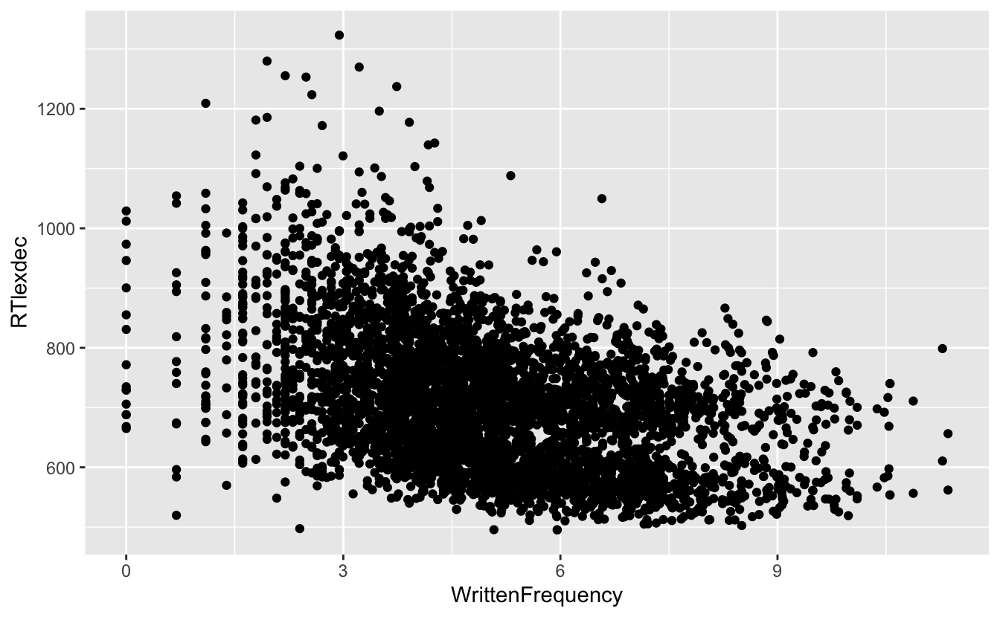

pacman::p_load(
tidyverse,
here
)10 Base R
Ein Vergleich mit tidyverse
Lesungen
Die Pflichtlektüre zur Vorbereitung auf dieses Thema ist Kapital 27 (A field guide to Base R) in Wickham et al. (2023).
Lernziele
In diesem Kapitel werden wir…
- lernen, was Base R ist
- Base R und Tidyverse vergleichen
- die Base-R-Äquivalente der Tidyverse-Verben kennenlernen
10.1 Base R
Die Basissoftware, die die Programmiersprache R enthält, heißt base-R oder natives R. Dieses Basissystem enthält das Paket base, das zum Ausführen von R erforderlich ist. Ähnlich wie tidyverse enthält das Basissystem auch einige Pakete wie utils und stats (unter anderem). Um zu sehen, welche Pakete enthalten sind, gehen Sie einfach auf die Registerkarte Pakete unten rechts in Ihrer RStudio-Sitzung. Unter der Annahme, dass Sie mit einer sauberen Arbeitsumgebung beginnen, sollten nur die Pakete geladen werden, die zum R-Basissystem gehören. Alle diese Pakete werden bei der Installation von R installiert. Mit dieser Sammlung von Paketen können die meisten (wenn nicht alle) der gleichen Ziele wie mit tidyverse erreicht werden, auch wenn beide für bestimmte Ziele vorzuziehen oder besser zu rationalisieren sind.
Wie wir bereits gelernt haben, ist das Tidyverse (Wickham et al., 2019a) eine Familie von R-Paketen, die das Bereinigen und Verwalten von Daten erleichtern sollen. Der Hauptentwickler von Tidyverse ist Hadley Wickham, der Chefwissenschaftler von Posit (ehemals RStudio), dem Softwareunternehmen, das die integrierte Entwicklungsumgebung (IDE) RStudio entwickelt hat. Alle Pakete in Tidyverse “teilen eine High-Level-Design-Philosophie und Low-Level-Grammatik und Datenstrukturen, so dass das Erlernen eines Pakets es einfacher macht, das nächste zu erlernen” (Wickham et al., 2019b). Allerdings wurde das Tidyverse in der Programmiersprache R geschrieben, sodass die beiden nicht vollständig voneinander getrennt sind.
Sowohl Base R als auch tidyverse sind Open-Source-Sprachen, die für die Datenwissenschaft geschrieben wurden. Ein Hauptziel von Base R ist die Stabilität, d. h. der Code sollte über viele Jahre hinweg stabil sein. Tidyverse hingegen fügt ständig Funktionen und Argumente hinzu, aktualisiert sie und ändert sie mit neuen Paketversionen im Hinblick auf die Optimierung. Dies bedeutet, dass Tidyverse-Code anfällig für “Brüche” ist: Tidyverse-Code, der heute läuft, läuft vielleicht in ein paar Jahren nicht mehr, wenn einige Funktionen oder Argumente “veraltet” sind. Deshalb ist es so wichtig, dass Sie immer Ihre sessionInfo() mit einem Bericht mitschicken, sie dokumentiert, welche Pakete und deren Versionen Sie verwendet haben.
In der Debatte zwischen Base R und Tidyverse gibt es in der Regel drei Lager: die starken Befürworter von Base R, die starken Befürworter von Tidyverse und die Agnostiker. In Bezug auf den R-Unterricht gibt es mehrere Arbeiten, in denen die potenziellen Vorteile des Unterrichts von Base R oder des Tidyverse bzw. einer Kombination aus beidem untersucht werden. Einige argumentieren, dass das Lehren der Tidyverse für Schüler intuitiver ist, während andere behaupten, dass Base R der “einzige” Weg ist, um echte R-Kenntnisse zu erlangen. Base R ist z.B. einfacher, wenn es darum geht, eine einzelne Variable zu extrahieren, aber selbst unter standhaften Base R-Nutzern wird das Paket ggplot2 oft bevorzugt, um Diagramme zu erstellen. Unten sehen wir einen Tweet von Prof. Christopher Zorn (Penn State), der vorschlägt, dass die Kenntnis des “tidyverse” nicht bedeutet, dass man R kennt, mit einer Antwort von Prof. Bodo Winter (University of Birmingham) zur Unterstützung des tidyverse. Viele andere Antworten wiesen auf die verschiedenen Vorteile des Tidyverse hin, von der Lehre von R bis zur Arbeit in der Industrie. Wichtig (und für Sie als Linguistikstudenten relevant) ist, dass Bodo Winter der Autor von ‘Statistics for Linguists: An Introduction Using R’ (Winter, 2019), das ebenfalls tidyverse verwendet. Sein Buch sowie die Tutorien, die er als Doktorand geschrieben hat (Winter, 2013, 2014), sind in einer verständlichen Sprache verfasst, die sie für Studierende zugänglich macht. Es ist also kein Wunder, dass er ein Befürworter von tidyverse ist, das auch für Nicht-Programmierer zugänglich sein soll.
What a thing to say when modern R is pretty much synonymous with the tidyverse for many in the community!
— Bodo Winter ((BodoWinter?)) January 10, 2023
I was a Base R masochist once too.. but there's no need for statements like this when the tidyverse has helped so many of us be more productive and write more readable code.
Offensichtlich halte ich das Erlernen des Tidyversums für wichtig, denn ich habe mich entschieden, diesen Kurs auf Tidyversum-Pakete zu stützen. Das liegt daran, dass das Tidyverse den Menschen in den Mittelpunkt stellt, und dieser Kurs ist nicht für Programmierer oder Informatiker gedacht. Wie wir im obigen Tweet sehen, stimmt nicht jeder mit mir überein, aber es gibt auch viele Leute, die das tun.
10.1.1 Warum beides lernen?
Ich persönlich lernte Base R Jahre bevor ich Tidyverse lernte. Ich habe nie zurückgeblickt, und mein Code ist seit der Einführung von tidyverse und den dahinter stehenden Philosophien viel sauberer und besser lesbar geworden. Trotzdem gibt es immer noch bestimmte Aufgaben, für die ich Base R verwende, z. B. für einen schnellen Blick auf eine einzelne Variable oder wenn ich mit Listen oder verschachtelten Datenstrukturen arbeite (die wir in diesem Kurs nicht behandeln werden).
Auch wenn ich persönlich mit ähnlichen Ansichten wie im ursprünglichen Tweet oben nicht einverstanden bin (wie viele andere auch), ist die Kenntnis von Base R eine wichtige Fähigkeit, um Ihre R-Horizonte zu erweitern. Sie werden mit Sicherheit auf Base R-Code stoßen, wenn Sie nach Lösungen für Probleme suchen oder sich den Code von anderen ansehen. Unabhängig davon, ob jemand eine starke Vorliebe für Base R oder Tidyverse hat, ist es eine gute Idee, mit beiden Optionen vertraut zu sein, um das Beste aus der R-Community herauszuholen. Es ist wichtig zu verstehen, dass es so etwas wie perfekten Code nicht gibt, und dass es fast immer mehrere Möglichkeiten gibt, das gleiche Ziel zu erreichen, sogar innerhalb von Base R oder Tidyverse. Was wir heute lernen werden, ist im Wesentlichen, wie wir den Tidyverse-Code, mit dem wir vertraut sind, in Base R übersetzen können.
10.2 Einrichten
Wir werden heute ziemlich minimalistisch arbeiten. Alles was wir brauchen sind die Pakete tidyverse und here.
10.2.1 Einlesen
Wir werden den Datensatz languageR_english.csv einlesen, der sich bereits in Ihrem daten-Ordner befinden sollte. Dieser Datensatz enthält Daten aus einer Benennungs- und lexikalischen Entscheidungsaufgabe in Englisch.
10.2.2 CSV
Wir haben bereits gesehen, wie man die read_() Familie von Funktionen (read_csv(), read_csv2(), read_delim(), etc.) aus dem readr Paket aus dem tidyverse benutzt.
tidyverse
df_tidy <-
read_csv(
here("daten", "languageR_english.csv")
)Um einen Datensatz mit kommagetrennten Werten (CSV) einzulesen, können wir die Funktion read.csv() verwenden, die eine Version der umfassenderen Funktion read.table() aus dem Paket utils ist. Das utils-Paket ist ein Standard-Installationspaket in R, so wie einige Anwendungen bereits installiert sind, wenn man ein neues Telefon kauft.
Base R
df_base <-
read.csv(
here("daten", "languageR_english.csv")
)Das erste, was Ihnen vielleicht auffällt, ist, dass wir beim Ausführen von read_csv() eine Meldung erhalten haben, die uns die Anzahl der Zeilen und Spalten in den Daten, das verwendete Trennzeichen (bei read_csv() immer ein Komma) und den Datentyp, zu dem unsere Variablen gehören, mitteilt. Hier haben wir gesehen, dass wir drei Zeichenvariablen (chr) und vier numerische Variablen (dbl für “double”) haben. Bei der Verwendung von read.csv() erhalten wir keine derartige Meldung. Im Allgemeinen ist Tidyverse ein besserer Gesprächspartner als Base R. Sie erhalten mehr Meldungen, und die Warn- oder Fehlermeldungen sind anschaulicher.
Ein weiterer Unterschied zwischen diesen beiden Funktionen ist die Art und Weise, wie sie read und csv trennen: tidyverse verwendet typischerweise _, um Wörter zu trennen, während Base R dazu neigt, eine Mischung aus . und _ zu verwenden. Dies geht auf die Prinzipien von tidyverse zurück, in denen versucht wird, konsistente Konventionen beizubehalten, um sauberen Code und saubere Daten zu fördern. Dazu gehört auch die konsequente Verwendung von `_” in Funktions- und Variablennamen.
Schauen wir uns nun die beiden Objekte an, die wir jetzt haben. Wie viele Spalten haben sie?
length(df_tidy)[1] 7length(df_base)[1] 7Beide haben 7 Spalten. Wie lauten die Namen dieser Spalten?
names(df_base)[1] "AgeSubject" "Word" "LengthInLetters" "WrittenFrequency"
[5] "WordCategory" "RTlexdec" "RTnaming" names(df_tidy)[1] "AgeSubject" "Word" "LengthInLetters" "WrittenFrequency"
[5] "WordCategory" "RTlexdec" "RTnaming" Sie haben auch die gleichen Namen, so weit, so gut. Wie viele Zeilen gibt es in jedem?
nrow(df_tidy)[1] 4568nrow(df_base)[1] 4568Beide haben 4568 Zeilen. Die Datenstruktur ist also identisch.
10.2.3 Andere Begrenzungszeichen
Erinnern Sie sich, dass wir mit dem tidyverse-Paket readr read_delim(delim = "") verwenden können, um das Trennzeichen explizit zu definieren. Hier verwenden wir delim = ",", weil wir immer noch eine kommagetrennte Wertedatei verwenden.
tidyverse
df_tidy <-
read_delim(
here("daten", "languageR_english.csv"),
delim = ","
)Wir können dies mit read.table(sep = "") aus dem Paket utils tun.
Base R
df_base <-read.table(
here("daten", "languageR_english.csv"),
sep = ",",
header = TRUE
)
Begrenzungszeichen und Trennzeichen
Versuchen Sie, das Trennzeichen in den obigen Code-Blöcken durch ein Semikolon (;) zu ersetzen. Was ändert sich, und warum? Ändern Sie es wieder in ein Komma und führen Sie es erneut aus, bevor Sie fortfahren.
10.2.4 Datenrahmen versus Tibbles
Daten, die mit tidyverse eingelesen werden, werden als Tibble gespeichert, das als eine aufgeräumtere Version eines Datenrahmens gilt. Wichtig ist, dass die Struktur eines Tibbles und die darin enthaltenen Informationen mit denen eines Datenrahmens identisch sind. Im Folgenden werden wir einige Unterschiede zwischen Tibbles und Datenrahmen sehen.
10.3 Umgang mit Spalten und Zeilen
Wir sind bereits mit einer Reihe von dplyr-Verben vertraut, die zum Manipulieren, Filtern und Extrahieren von Zeilen und Spalten verwendet werden. Jetzt sehen wir uns alternative Wege an, um die gleichen Ergebnisse mit Base R zu erzielen.
10.3.1 Variablen extrahieren
Wir sind bereits vertraut mit select() aus dplyr:
tidyverse
df_tidy |>
select(AgeSubject)# A tibble: 10 × 1
AgeSubject
<chr>
1 young
2 young
3 young
4 young
5 young
6 young
7 young
8 young
9 young
10 young In Base R können wir ein Dollarzeichen ($) verwenden, um eine Spalte aus einem Datenrahmen (oder Tibble) zu extrahieren. Dadurch erhalten wir einen Vektor, während dplyr::select() die Datenrahmen-/Tibble-Attribute der Spalte beibehält.
Base R
df_base$AgeSubject [1] "young" "young" "young" "young" "young" "young" "young" "young" "young"
[10] "young" "young" "young" "young" "young" "young" "young" "young" "young"Alternativ kann man auch dataframe[row,column] verwenden, um Zeilen und Spalten zu definieren. Wir können den Namen einer Spalte in Anführungszeichen verwenden oder den Index der Spalte angeben, wobei 1 für die erste Spalte steht, 2 für die zweite Spalte usw. Wir konzentrieren uns zunächst auf die Spalten, geben also nicht an, welche Zeile wir wollen, sondern geben alle Zeilen dieser Spalte aus.
Base R
# using variable name
df_base[,"AgeSubject"] [1] "young" "young" "young" "young" "young" "young" "young" "young" "young"
[10] "young" "young" "young" "young" "young" "young" "young" "young" "young"Base R
# using variable index
df_base[,1] [1] "young" "young" "young" "young" "young" "young" "young" "young" "young"
[10] "young" "young" "young" "young" "young" "young" "young" "young" "young"Ein Hauptunterschied zwischen der Verwendung von tidyverse und Base R zum Extrahieren einer einzelnen Variablen besteht darin, dass Base R einen Vektor extrahiert, während das tidyverse-Verb select() die Variable als Tibble behält. Beachten Sie, dass es auch möglich ist, mehrere Variablen mit der Funktion select() auszuwählen. Sie können dies auch mit Base R tun, aber Sie müssen die Funktion c() verwenden.
tidyverse
df_tidy |>
select(AgeSubject, RTlexdec)# A tibble: 10 × 2
AgeSubject RTlexdec
<chr> <dbl>
1 young 695.
2 young 600.
3 young 547.
4 young 617.
5 young 633.
6 young 687.
7 young 584.
8 young 527.
9 young 741.
10 young 536.Base R
# using variable name
df_base[,c("AgeSubject", "RTlexdec")] AgeSubject RTlexdec
1 young 694.89
2 young 600.40
3 young 547.27
4 young 616.60
5 young 633.08
6 young 686.75
7 young 584.40
8 young 526.82
9 young 741.48
10 young 536.38Base R
# using variable index
df_base[,c(1, 6)] AgeSubject RTlexdec
1 young 694.89
2 young 600.40
3 young 547.27
4 young 616.60
5 young 633.08
6 young 686.75
7 young 584.40
8 young 526.82
9 young 741.48
10 young 536.3810.3.1.1 Mischen von Tibbles und Datenrahmen
Die Ausgabe dieser Operationen hängt nicht nur davon ab, ob Sie eine Tidyverse- oder eine R-Basisfunktion verwenden. Es macht auch einen Unterschied, ob die Daten ein Datenrahmen oder ein Tibble sind. Versuchen wir, die Funktion select() von tidyverse auf einen Datenrahmen anzuwenden:
tidyverse
df_base |>
select(AgeSubject)# A tibble: 10 × 1
AgeSubject
<chr>
1 young
2 young
3 young
4 young
5 young
6 young
7 young
8 young
9 young
10 young Base R behandelt Tibbles jedoch genauso wie Datenrahmen und gibt einen Vektor mit allen Werten einer einzelnen Spalte aus.
Base R
df_tidy$AgeSubject [1] "young" "young" "young" "young" "young" "young" "young" "young" "young"
[10] "young"Dies sollte keine Folgen haben, aber es ist wichtig, die innere Struktur Ihrer Daten zu verstehen, damit Sie entsprechend damit arbeiten können.
10.3.2 Beobachtungen extrahieren/filtern
Wir haben bereits die Funktion filter() von dplyr gesehen, die Zeilen extrahiert, die logischen Bedingungen entsprechen.
tidyverse
df_tidy |>
filter(RTlexdec > 600 & RTnaming < 480)# A tibble: 856 × 7
AgeSubject Word LengthInLetters WrittenFrequency WordCategory RTlexdec
<chr> <chr> <dbl> <dbl> <chr> <dbl>
1 young doe 3 3.91 N 695.
2 young pork 4 5.02 N 617.
3 young prop 4 4.77 N 687.
4 young arc 3 4.89 N 741.
5 young tile 4 4.08 N 647.
6 young slope 5 5.80 N 633.
7 young pith 4 2.48 N 696.
8 young blitz 5 4.19 N 672.
9 young port 4 6.08 N 683.
10 young plan 4 7.46 N 636.
# ℹ 846 more rows
# ℹ 1 more variable: RTnaming <dbl>Wir können diese bedingten Anweisungen in [,] einfügen, wobei zu beachten ist, dass die Zeilen vor dem Komma und die Spalten nach dem Komma angegeben werden. Wir lassen die Spaltenangabe leer, d. h. wir wollen alle Spalten ausgeben. Wichtig ist, dass wir in den bedingten Anweisungen den Namen des Datenrahmens mit dem Dollarzeichen vor dem Spaltennamen angeben.
Base R
df_base[df_base$RTlexdec > 600 & df_base$RTnaming < 480,] AgeSubject Word LengthInLetters WrittenFrequency WordCategory RTlexdec
1 young doe 3 3.912023 N 694.89
4 young pork 4 5.017280 N 616.60
6 young prop 4 4.770685 N 686.75
9 young arc 3 4.890349 N 741.48
17 young tile 4 4.077537 N 647.07
18 young slope 5 5.802118 N 632.54
22 young pith 4 2.484907 N 695.86
26 young blitz 5 4.189655 N 671.59
29 young port 4 6.084499 N 683.36
34 young plan 4 7.462789 N 636.10
RTnaming
1 466.4
4 460.3
6 477.1
9 453.8
17 459.3
18 476.2
22 473.3
26 469.5
29 459.3
34 470.410.3.3 Einzelne Datenpunkte auswählen
Wir können bestimmte Zeilen und bestimmte Spalten auf einmal extrahieren. Wenn wir zum Beispiel die relevanten Zeilen wie oben ausgeben wollen, aber nur die Spalten AgeSubject und RTlexdec, können wir dies mit filter() und select() tun (was wir bereits zuvor getan haben).
tidyverse
df_tidy |>
filter(RTlexdec > 600, RTnaming < 480) |>
select(AgeSubject, RTlexdec)# A tibble: 10 × 2
AgeSubject RTlexdec
<chr> <dbl>
1 young 695.
2 young 617.
3 young 687.
4 young 741.
5 young 647.
6 young 633.
7 young 696.
8 young 672.
9 young 683.
10 young 636.In Base R würden wir dies einfach in [,] einfügen. Dadurch erhalten wir keinen Vektor mehr, sondern die Datenrahmenstruktur bleibt erhalten. Nicht, dass wir auch die Zeilennummern erhalten.
Base R
df_base[df_base$RTlexdec > 600 & df_base$RTnaming < 480,c("AgeSubject", "RTlexdec")] AgeSubject RTlexdec
1 young 694.89
4 young 616.60
6 young 686.75
9 young 741.48
17 young 647.07
18 young 632.54
22 young 695.86
26 young 671.59
29 young 683.36
34 young 636.10Auch hier können Sie die Spaltennamen durch den Indexwert ersetzen.
Base R
df_base[df_base$RTlexdec > 600 & df_base$RTnaming < 480,c(1, 6)] AgeSubject RTlexdec
1 young 694.89
4 young 616.60
6 young 686.75
9 young 741.48
17 young 647.07
18 young 632.54
22 young 695.86
26 young 671.59
29 young 683.36
34 young 636.1010.3.4 Neue Variablen erstellen
Wir haben gelernt, wie man mit der Funktion mutate(), die ebenfalls aus dplyr stammt, neue Variablen erstellt oder bestehende Variablen ändert.
tidyverse
df_tidy |>
mutate(rt_lexdec_s = RTlexdec/1000)# A tibble: 4,568 × 8
AgeSubject Word LengthInLetters WrittenFrequency WordCategory RTlexdec
<chr> <chr> <dbl> <dbl> <chr> <dbl>
1 young doe 3 3.91 N 695.
2 young whore 5 4.52 N 600.
3 young stress 6 6.51 N 547.
4 young pork 4 5.02 N 617.
5 young plug 4 4.89 N 633.
6 young prop 4 4.77 N 687.
7 young dawn 4 6.38 N 584.
8 young dog 3 7.16 N 527.
9 young arc 3 4.89 N 741.
10 young skirt 5 5.93 N 536.
# ℹ 4,558 more rows
# ℹ 2 more variables: RTnaming <dbl>, rt_lexdec_s <dbl>In Base R geschieht dies, indem wir den Namen der neuen Variablen definieren und ihr mit dem Zuweisungsoperator <- einen Wert zuweisen.
Base R
df_base$rt_lexdec_s <- df_base$RTlexdec/100010.3.5 Zusammenfassen
Als Letztes wollen wir lernen, wie man in Base R zusammenfasst. Das ist nicht einfach, wenn man eine Gruppe hat, deshalb werden wir das nicht behandeln.
tidyverse
df_tidy |>
summarise(
mean_lexdec = mean(RTlexdec),
sd_lexdec = sd(RTlexdec),
mean_naming = mean(RTnaming, na.rm = T),
sd_naming = sd(RTnaming, na.rm = T)
)# A tibble: 1 × 4
mean_lexdec sd_lexdec mean_naming sd_naming
<dbl> <dbl> <dbl> <dbl>
1 708. 115. 566. 101.In Base R müssen wir neue Objekte erstellen, die den Wert jeder Operation enthalten, und sie mit der Funktion “data.frame()” zu einem Datenrahmen zusammenfassen.
Base R
data.frame(mean_lexdec = mean(df_base$RTlexdec),
sd_lexdec = sd(df_base$RTlexdec),
mean_naming = mean(df_base$RTnaming, na.rm = T),
sd_naming = sd(df_base$RTnaming, na.rm = T)) mean_lexdec sd_lexdec mean_naming sd_naming
1 708.1336 114.8599 565.9233 100.815310.4 Pipes
Lange Zeit waren Pipes ein Feature des Tidyverse, mit der %>% Pipe aus dem magrittr Paket. Seit 2023 bietet R eine native Pipe |>. Sie haben vielleicht schon beide Versionen gesehen (ich tendiere dazu, |> zu benutzen). Für unsere Zwecke sind sie austauschbar, aber es gibt wichtige Unterschiede für komplexere Fälle, die wir nicht behandeln werden.
tidyverse
df_base$RTlexdec |>
mean()[1] 708.1336Base R
df_base$RTlexdec %>%
mean()[1] 708.133610.5 Plots
ggplot2 ist auch bei Leuten beliebt, die sonst nicht die tidyverse-Paketfamilie nutzen. Das liegt daran, dass es einige nützliche Funktionen und ein sauberes Aussehen hat.
Das Plotten mit Base R kann auch sehr praktisch sein, wenn man einfache Diagramme erstellen will, um einen ersten Blick auf die Daten zu bekommen. Die nützlichsten Funktionen sind hist() und plot(), die jeweils Histogramme und Streudiagramme erzeugen. Beachten Sie, dass diese Funktionen mit Vektoren arbeiten, weswegen wir $ verwenden müssen, um die Spalten aus dem Datenrahmen zu extrahieren.
Base R
# left
hist(df_base$RTlexdec)
# right
plot(df_base$RTlexdec, df_base$RTnaming)


To achieve the same thing with the tidyverse:
tidyverse
# histogram
df_base |>
ggplot() +
aes(x = RTlexdec) +
geom_histogram()
# scatter plot
df_base |>
ggplot() +
aes(x = RTlexdec, y = RTnaming) +
geom_point() 
Lernziele 🏁
In diesem Kapitel werden wir…
- lernen, was Base R ist ✅
- Base R und Tidyverse vergleichen ✅
- die Base-R-Äquivalente der Tidyverse-Verben kennenlernen ✅
10.6 Aufgaben
Konvertieren Sie den folgenden tidyverse-Code in Base R. Wir werden wieder den Datensatz “languageR_english.csv” verwenden.
10.6.1 Read-in
df_eng <-
read_csv(here("daten", "languageR_english.csv"))10.6.2 Auswahl der Spalten
df_eng |>
select(Word, WrittenFrequency)# A tibble: 10 × 2
Word WrittenFrequency
<chr> <dbl>
1 doe 3.91
2 whore 4.52
3 stress 6.51
4 pork 5.02
5 plug 4.89
6 prop 4.77
7 dawn 6.38
8 dog 7.16
9 arc 4.89
10 skirt 5.9310.6.3 Zeilen filtern
df_eng |>
filter(WrittenFrequency > 5.6)# A tibble: 10 × 7
AgeSubject Word LengthInLetters WrittenFrequency WordCategory RTlexdec
<chr> <chr> <dbl> <dbl> <chr> <dbl>
1 young stress 6 6.51 N 547.
2 young dawn 4 6.38 N 584.
3 young dog 3 7.16 N 527.
4 young skirt 5 5.93 N 536.
5 young are 3 11.3 N 611.
6 young pipe 4 6.00 N 563.
7 young guard 5 6.59 N 559.
8 young slope 5 5.80 N 633.
9 young pile 4 6.16 N 595.
10 young tide 4 6.08 N 598.
# ℹ 1 more variable: RTnaming <dbl>10.6.4 Auswahl von Zeilen und Spalten
df_eng |>
filter(WrittenFrequency > 5.6 & AgeSubject == "old") |>
select(AgeSubject, Word, WrittenFrequency) # A tibble: 10 × 3
AgeSubject Word WrittenFrequency
<chr> <chr> <dbl>
1 old stress 6.51
2 old dawn 6.38
3 old dog 7.16
4 old skirt 5.93
5 old are 11.3
6 old pipe 6.00
7 old guard 6.59
8 old slope 5.80
9 old pile 6.16
10 old tide 6.0810.6.5 Streudiagramm
df_eng |>
ggplot() +
aes(x = WrittenFrequency, y = RTlexdec) +
geom_point()
10.6.6 Tidyverse versus Base R
Wie ist Ihr Eindruck von Base R im Vergleich zu Tidyverse? Würden Sie, basierend auf dem, was Sie gesehen haben, das eine dem anderen vorziehen, oder würden Sie das eine nur in bestimmten Fällen vorziehen? Hier gibt es keine richtige Antwort.
Session Info
Hergestellt mit R version 4.4.0 (2024-04-24) (Puppy Cup) und RStudioversion 2023.9.0.463 (Desert Sunflower).
print(sessionInfo(),locale = F)R version 4.4.0 (2024-04-24)
Platform: aarch64-apple-darwin20
Running under: macOS Ventura 13.2.1
Matrix products: default
BLAS: /Library/Frameworks/R.framework/Versions/4.4-arm64/Resources/lib/libRblas.0.dylib
LAPACK: /Library/Frameworks/R.framework/Versions/4.4-arm64/Resources/lib/libRlapack.dylib; LAPACK version 3.12.0
attached base packages:
[1] stats graphics grDevices datasets utils methods base
other attached packages:
[1] patchwork_1.2.0 janitor_2.2.0 here_1.0.1 lubridate_1.9.3
[5] forcats_1.0.0 stringr_1.5.1 dplyr_1.1.4 purrr_1.0.2
[9] readr_2.1.5 tidyr_1.3.1 tibble_3.2.1 ggplot2_3.5.1
[13] tidyverse_2.0.0
loaded via a namespace (and not attached):
[1] utf8_1.2.4 generics_0.1.3 renv_1.0.7 stringi_1.8.3
[5] hms_1.1.3 digest_0.6.35 magrittr_2.0.3 evaluate_0.23
[9] grid_4.4.0 timechange_0.3.0 fastmap_1.1.1 rprojroot_2.0.4
[13] jsonlite_1.8.8 fansi_1.0.6 scales_1.3.0 cli_3.6.2
[17] crayon_1.5.2 rlang_1.1.3 bit64_4.0.5 munsell_0.5.1
[21] withr_3.0.0 yaml_2.3.8 parallel_4.4.0 tools_4.4.0
[25] tzdb_0.4.0 colorspace_2.1-0 pacman_0.5.1 vctrs_0.6.5
[29] R6_2.5.1 lifecycle_1.0.4 snakecase_0.11.1 htmlwidgets_1.6.4
[33] bit_4.0.5 vroom_1.6.5 pkgconfig_2.0.3 pillar_1.9.0
[37] gtable_0.3.5 glue_1.7.0 xfun_0.43 tidyselect_1.2.1
[41] rstudioapi_0.16.0 knitr_1.46 farver_2.1.1 htmltools_0.5.8.1
[45] labeling_0.4.3 rmarkdown_2.26 compiler_4.4.0